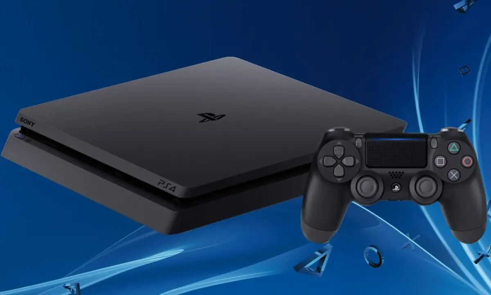
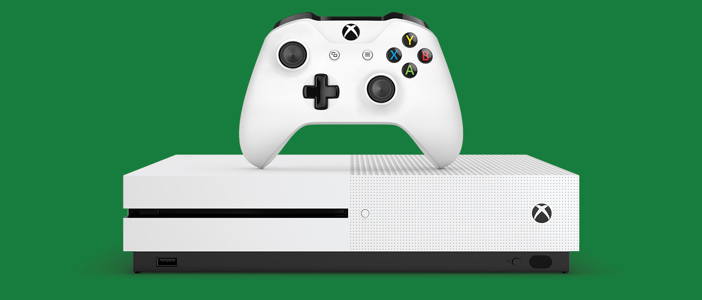

Productos que reparamos
PlayStation 4

Si la luz led de tu PS4 se pone a parpadear de color azul y no se apaga, incluso la consola no puede iniciarse y se reinicia, significa que tiene un problema grave. Generalmente es un problema que le impide transmitir el vídeo hasta el televisor.
De la misma forma que nuestra consola puede hacernos saber que hay un problema grave en el sistema con una luz azul parpadeante, también puede cambiar su color y mostrarla de color rojo. En este caso es probable que incluso la consola nos permita jugar con problemas, pero no deberíamos pasar de este aviso. Generalmente significa que la consola está detectando un sobrecalentamiento peligroso, lo que podría dar origen a problemas mucho más graves por desgaste de los componentes -debido al calor-. Algún pin que se desuelda, reinicios de la consola para evitar fallos mayores, etc.
Xbox One

Una de las cosas que más detestamos de la consola Xbox One es la interfaz para enviar mensajes e invitaciones a tus contactos. Pues es necesario acudir a una app diferente para encontrar un usuario y así enviarle la solicitud de amistad; que mayormente tarda unos minutos hasta cargar completamente. Tras las recientes actualizaciones ha mejorado de alguna manera un poco, aunque deseamos volver a la interfaz que tenía la Xbox One 360; porque a pesar de demorarse en cargar la lista de contactos, era más fácil y cómodo de utilizar.
Si no puedes disfrutar juegos en 4K, es probable que el problema esté en la configuración del televisor. En algunas ocasiones, podría tratarse de algo tan simple como que el título no admite 4K o algunos ajustes limitan la resolución en favor de otras funciones.
Nintendo Switch

Durante las primeras semanas tras el lanzamiento de la Switch, se hicieron virales las fotos de algunas pantallas con las esquinas de la pantalla rayadas, supuestamente por culpa del dock (la base). Después se demostró que introducir la consola en el dock no raya la pantalla, si lo haces correctamente. Hay que ser cuidadosos y hacerlo correctamente, en vertical y sin forzar.
Desde hace meses, algunos usuarios de Nintendo Switch están teniendo problemas con sus Joy-Con. Es lo que se conoce como el 'Joy-Con Drift'. Toques accidentales, fallos de conexión.